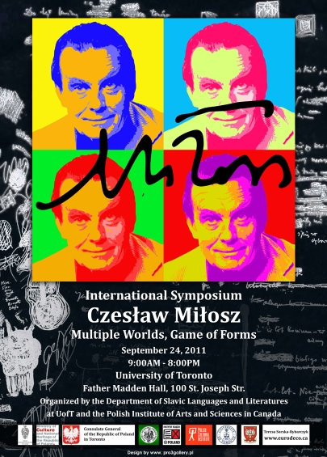

March 29
Film screening: Różyczka
Dr. Justyna Zych organized a screening of the Polish movie Różyczka,
directed by Jan Kidawa-Błoński, for the students of the Polish Program.
March 22
Polish Book Club
The third meeting of the Polish Book Club, led by Dr. Justyna Zych, took place.
It was dedicated to the novel Uwikłanie by Zygmunt Miłoszewski.
March 19
Meeting with Andrew Borkowski
Dr. Justyna Zych organized a meeting with Andrew Borkowski,
Polish- Canadian writer, for the students of the Polish Program at UofT.
Andrew Borkowski led a guided tour in Roncesvalles Village, a Polish neighbourhood in Toronto, and talked about his book Copernicus Avenue.
February 23
Polish Book Club Meeting
The second meeting of the Polish Book Club, led by Dr. Justyna Zych, took place.
The club members discussed the novel Siódemka by Ziemowit Szczerek.
February 11
Fighting Poland
Students of the Polish Program with Dr. Justyna Zych participated in the opening of the exhibition Fighting Poland at the Munk School of Global Affairs.
February 9
Polish Politeness & Savoir-Vivre
Dr. Justyna Zych organized a special event, "Polish Politeness & Savoir-Vivre" for
all the students of the Polish Program at UofT.
January 26
Polish Book Club
The first meeting of the Polish Book Club, led by Dr. Justyna Zych, took place. The
participants shared their interpretations of the book Włoskie szpilki by Magdalena Tulli.
January 19
Polish Language Games
The Polish Program held the event: Polish Language Games, hosted by Dr. Justyna
Zych.
December 8
Wigilia
The Polish Program held the event: Wigilia - Christmas Meeting for Students, led by Dr. Justyna Zych
December 8
Witkacy: Soul and Form
Prof. Tamara Trojanowska presented a 45- minute paper during a one-day
colloquium, titled, “Witkacy: Soul and Form”, organized by the The Hejna Chair in Polish
Language and Literature at the University of Illinois at Chicago, upon the occasion of the 130th
anniversary of Stanisław Ignacy Witkiewicz’s birth.
December 4
Prof. Edyta Bojanowska (Rutgers University) gave a talk entitled “Pineapples in
Petersburg, Cabbage Soup on - the Equator: Imperialism, - Globalization, and Ivan Goncharov’s Travels in Asia.”
November 16
Film Screening
The unique film Powstanie Warszawskie - (Warsaw Uprising), made entirely from
documentary materials of the original chronicles, was presented at the Slavic Department. The screening was followed by a Q&A with the director Jan Komasa hosted by Dr. Justyna Zych.
November 5
Polish Board Games
The Polish Program organized a special event of Polish board games for students
interested in Polish language and culture, hosted by Dr. Justyna Zych.
October 31
Chopin Without Piano
Prof. Tamara Trojanowska took part in the post-show panel discussion of Michał Zadara and
Barbara Wysocka’s performance, Chopin Without Piano (with Bassem Akiki conducting the
Chamber Orchestra of Philadelphia), in Philadelphia on October 31.
October 24
International Festival of Authors
Students of the Polish Program at UofT with Dr. Justyna Zych went to the International Festival of Authors in Harbourfront Centre to attend the interview with Witold Szabłowski, famous Polish journalist and writer who talked about his book Zabójca z miasta moreli (translated into English as The Assassin from Apricot City).
September 22
Polish Trivia Night
Dr. Justyna Zych organized a special event of Polish trivia for all the students
attending Polish language courses at UofT.
March 30
Dr. Justyna Zych gave a talk entitled "Reception of Psychoanalysis in France and in Poland and the Influence of Freud's Theory on French and Polish Literary Criticism in the First Decades of the 20th Century" at the Slavic Department.
February 24
The Polish Students Association in collaboration with the Polish Language and
Literature Program at UofT organized a screening of the famous Polish comedy Poszukiwany, poszukiwana.
February 12
Margarete by Janek Turkowski
Students of the Polish Program with Dr. Justyna Zych attended the play Margarete by Janek Turkowski at the Theatre Centre. It was presented by Polish Theatre Kana, which came to Toronto to participate in the Progress Festival.
February 9
Students of the Polish Program went with Dr. Justyna Zych to the Theatre Centre to participate in the opening of the exhibition dedicated to Witkacy’s work
February 9
Witkacy’s “Great
Nonsense” opened at the Theatre Centre. The opening of the exhibition was followed by Prof. Tamara Trojanowska’s lecture “Witkacy Performer”.
January 20
The Polish Program organized a special event of Polish trivia for all the students attending Polish language courses at UofT.
January 16
Villa Toronto
Students of the Polish Program went with Dr. Justyna Zych to the Union Station to
see the exhibition Villa Toronto, featuring works by Polish contemporary artists.
January 9
Students of the Polish Program went with Dr. Justyna Zych to the Munk School of
Global Affairs to participate in the opening of the exhibition From War to Victory, 1939-1989.
November 16
Prof. Tamara Trojanowska hosted a panel of Polish-Canadian writers, including Andrew
Borkowski, Jowita Bydlewska, Eva Stachniak and Ania Szado, at INSPIRE, the International Book Fair in Toronto.
November 5
Ekran Film Festival
Students of the Polish Program with Dr. Justyna Zych participated in the opening of the Ekran Polish Film Festival in the Revue Cinema in Roncesvalle
October 13
Polish Board Games
Dr. Justyna Zych organized Polish board games night for all the students attending
Polish language courses at UofT
October 6
The Slavic Department presented a lecture by Professor Andrzej Nowak: "Western 'Appeasement' and its Eastern European Victims: From World War One to World War Three."
September 23
Shakespeare in Polish Posters
The Slavic Dept. presented a richly illustrated lecture by Dr. Zbigniew Latala
(Cracow University of Technology), entitled "Shakespeare in Polish Posters."
November 20
AT THE CULTURAL CROSSROADS
Award-winning novelist Ewa Stachniak,
the author of The Winter Palace
in conversation with actress and visual artist from Los Angeles,
Beata Pozniak Daniels
(the voice of the audio version of The Winter Palace)
Charbonnel Lounge, Elmsley Hall
81 St. Mary Street, Toronto
Screen-play & Directing: Miroslaw Polatynski
Sound & multimedia: Bogdan Paszkiewicz
Interviewer: Louiza Szacon
October 24
EKRAN Toronto Polish Film Festival
&The Consulate General of The Republic of Poland
&
University of Toronto
Department of Slavic Languages and Literatures
Present:
Prof. Marek Haltof
Polish Film and the Holocaust: Politics and Memory
Lecture and Book Signing
Wednesday, October 24th, 2012, 6-8 p.m.
Elmsley Hall, Charbonnel Lounge, 81 St. Mary Str. , Toronto
During World War II, Poland lost more than six million people, including three million Polish Jews who perished in the ghettos and extermination camps built by Nazi Germany on occupied Polish territories. This book is the first to address the representation of the Holocaust in Polish film, and does so through a detailed treatment of several films, which the author frames in relation to the political, ideological, and cultural contexts of the times in which they were created.
Professor Marek Haltof joined the faculty of Northern Michigan University in 2001. Since completing his doctoral dissertation in 1995, he has published several books in English and Polish on the cultural histories of Central European and Australian film. His most recent book is Polish Film and the Holocaust: Politics and Memory (New York: Berghahn Books, 2012). Prof. Haltof specializes in Central European Cinema, Australian Cinema; Film and Propaganda; Authorship and Art Cinema (Krzysztof Kieslowski, Peter Weir, Roman Polanski).
September 18
The Department of Slavic Languages and Literatures/b>
at the University of Toronto
Presents
"WRITING ON THE EDGE OF TWO CULTURES"
September 18, 2-4pm
Charbonnel Lounge, Elmsley Hall
81 St. Mary Street
Our guests:
ANDREW BORKOWSKI
"An End to Silence: How a Lost Generation Can Recover Its Voice."
Toronto-based writer, editor, journalist, musician. He has published articles in the Globe and Mail, the Canadian Forum, Quill & Quire, TV Guide, and the Los Angeles Times, and contributed as an editor to titles published by John Wiley and Sons Canada, McGraw-Hill Ryerson, Pearson Canada and D&M Publishers. His debut collection of short stories, Copernicus Avenue (2011) has won the 2012 Toronto Book Award.
ANTANAS SILEIKA
"Nowhere Land"
Novelist, critic, director of the Humber School for Writers in Toronto, author of numerous novels, including Dinner at the End of the World (1994), Woman in Bronze (a Globe Best Book of 2004), Underground (named as one of the Globe and Mail’s 100 Best Books of 2011), and of a collection of linked short stories, Buying On Time (1997). The latter was nominated for the City of Toronto Book Award and the Stephen Leacock Award for Humor.
EVA STACHNIAK
"Immigration and Identity: Becoming a Canadian Writer"
Novelist, short stories writer, radio broadcaster, college English and Humanities lecturer. Her debut short story, "Marble Heroes" (1994) was followed by four novels: Necessary Lies (a winner of the Amazon.com/Books in Canada First Novel Award in 2000), Garden of Venus (translated into several languages), Dysonans (2009), and the bestselling Winter Palace (2012).
JOANNA TRZECIAK
"Mystery That Grows: On Translating Tadeusz Rozewicz"
Teaches in the Translation Studies and creative writing programs at Kent State University. She has translated Nabokov into Russian and Joseph Brodsky into English. Her book-length translations from the Polish include Miracle Fair: Selected poems of Wisława Szymborska (winner of THE 2001 Heldt Translation Prize) and Sobbing Superpower: Selected Poems of Tadeusz Różewicz (shortlisted for the 2012 Griffin Poetry Prize). Her translations have appeared in The New Yorker, The New Republic, Atlantic Monthly, Harper's, Poetry, Paris Review, among others.
March 18
The Polish Students’ Association at the University of Toronto celebrates its 60th birthday and presents:
Spring Soirée: A Concert for Polish Studies
a fundraising event for the Council for Support of Polish Studies at the University of Toronto
John Paul II Polish Cultural Centre
4300 Cawthra Road, Mississauga.
March 8
Starring Madame Modjeska. On Tour in Poland and America
A public lecture by Professor Beth Holmgren
6pm, Carr Hall, Father Madden Hall
100 St. Joseph St.
March 3-4
Polish Universities Fair at UofT (Hart House)
March 1
Film Screening #4:
Chłopaki nie płaczą (Boys Don't Cry)
Carr Hall 404, 7pm
February 3-29
Exhibition THE PHENOMENON OF SOLIDARITY
at
the Munk School of Global Affairs, UofT
1 Devonshire Place, Toronto
February 29
Professor M. Tarnawsky's Cossack Film Series:
Ogniem i mieczem (With Fire and Sword)
Brennan Hall, room 200 (Sam Sorbara Auditorium), 7pm
December 6
Christmas Eve Party
Centre for International Experience Lobby, 6 p.m.
November 29
Andrzejki / St. Andrew's Eve Party
Slavic Department Lounge Room (Alumni Hall, 4th floor), 7 p.m.
November 17
Film Screening #3:
Beats of Freedom
Carr Hall 403, 7 p.m.
November 3
Film Screening #2:
The Way Back
Carr Hall 403, 7 p.m.
October 27
Film Screening #1:
Body
Carr Hall 403, 7 p.m.
September 24
International Symposium
"CZESŁAW MIŁOSZ: MULTIPLE WORLDS, GAME OF FORMS"

Program:
9:00 Coffee
9:15 Opening remarks
Tamara Trojanowska (University of Toronto), Stanisław Latek (Polish
Institute of Arts and Sciences, Canada)
9:30–10:15 Miłosz, the Public Figure
Ryszard Nycz (Jagiellonian University), "Czesław Miłosz:
Twentieth-century Poet in the Public Realm."
10:15–10:40 Coffee break and performance
Artistic Conceptualization: Antje Budde (UC Drama and Centre for
Comparative Literature, UofT), Teresa Sorska-Rybarczyk (Eurodeco
Planning Consultants), Tamara Trojanowska (UC Drama and Slavic
Department)
Director: Antje Budde
Performers: Alex Baczynskyj, Alexandra Dąbrowski, Kevin Kashani, Polly
Phokeev
Stage Manager: Una Ruud
Technical Assistance: Doug Hamilton
10:40–12:40 Miłosz, the Versatile Thinker
Kris Van Heuckelom (Leuven Catholic University), "Czesław Miłosz:
Between Pastiche and Confession."
Marek Zaleski (Institute of Literary Research, "Polish Institute of
Arts and Sciences), "Miłosz: See Under Love."
Włodzimierz Krysiński (University of Montreal), "Czesław Miłosz and the
So-called Lyrical 'I' in Modern Poetry."
12:40–2:00 Lunch break
2:00–4:00 Miłosz in Contexts
Bożena Karwowska (University of British Columbia), "Reading Miłosz in
Exile."
Małgorzata Smorąg-Goldberg (University of Paris IV-Sorbonne),
"In the Mirror of Zygmunt Hertz, or the Epistolary Alliance of Two
Dissidences. Czesław Miłosz and the 'Stance' of Kultura."
Marie Bouvard (University of Bordeaux 3), "'And Greece/Who Remembers Here.'
America in the Poetry of Czesław Miłosz (1945-1950)".
4:00-6:00 Dinner break
6:00 Poetry Evening with Piotr Sommer
Organizers
Department of Slavic Languages and Literatures at the University of
Toronto
Polish Institute of Arts and Sciences, Canada
Polish Academy of Arts and Sciences, Poland
September 26
"Where American Poetry Ended Up and How Polish Poetry Started Again"
A Public Lecture by Piotr Sommer, Polish Poet
September 26
The Philosophy of the Human Person and Human Rights
in the Thought of Karol Wojtyła/ John Paul II
A public lecture by
Alfred Marek Wierzbicki
Director of the John Paul II Institute at the Catholic University of Lublin, Poland
September 29, 2011 at 4 p.m., reception to follow
Charbonnel Lounge
81. St. Mary's Street
Fundacja im. Adama Mickiewicza w Kanadzie
(he Adam Mickiewicz Foundation in Canada)
and
Polish Language and Literature Program
at the University of Toronto
are sponsoring a lecture
Mieczysław B. Biskupski
Hollywood’s Portrayal of Poland
Thursday, March 24, 2011, at 7 p.m.
University of St. Michael’s College
121 St. Joseph Street, Toronto
Alumni Hall, Room 400
Prof. Biskupski is holder of the Chair in Polish and Polish American Studies at Central Connecticut State University and author of the recently published book Hollywood’s War with Poland, 1939–1945
November 23
An evening with Olga Tokarczuk
Olga Tokarczuk is one of the most popular and highly esteemed (by both critics and the reading public) writers in contemporary Poland, a winner of prestigious literary awards, including Polish Publishers’ Association and Koscielski Awards, and the 2008 ‘Nike’ for her novel ‘Runners’.
Charbonelle Lounge, 81 St. Mary St.
November 22
Spotkanie z profesor Marią Kornatowską (Polska
Szkoła Filmowa)
Dyskusja o współczesnym polskim kinie.
Monday, November 22, 6 p.m.
Charbonelle Lounge, 81 St. Mary St.
Polish Language and Literature Program's Open House for the Polish High Schools
November
Czego nowoczesny poeta szuka w teatrze?
Bialoszewski i Herbert."
Wykład Prof. Jacka Kopcińskiego
(IBL PAN, Uniwersytet im. Kardynała Stefana Wyszyńskiego w Warszawie)
November 19-21International Conference
"After the wall was Over: Performing the New Europe"
Organized by Profs. Pia Kleber and Tamara Trojanowska and hosted by University College Drama Program, the conference gathered international scholars and artists from Canada, Germany, Italy, Poland, Scotland, Sweden, and the United States. It celebrated the 20th anniversary of the end of communist rule in Eastern Europe and critically assessed the consequences of this monumental change through discussions about theatre and performing arts. The conference was accompanied by an exhibition, The Decade of Solidarity, organized by the Consulate General of the Republic of Poland, and featured a photo exhibit in the Consulate General of the Republic of Germany. The organizers also presented a new documentary, Up Against the Wall, by Eileen Thalenberg and hosted the director at the screening.
BATTLE FOR WARSAW
by
Wanda Koscia
The Department of Slavic Languages and Literatures with the support of the Adam Mickiewicz Foundation invites you to the screening of the BBC documentary Battle for Warsaw by Wanda Koscia.
Monday, October 20, 6:30 pm
Emmanuel College (75 Queen's Park Crescent), room 00
November 1
THE WRITINGS OF JOSEPH CONRAD - THREE PERSPECTIVES
Program:
9:30 - 10:20
Martin Bock (University of Minnesota Duluth)
"Toward a Nosology of Conrad's Fiction."
10:20-10:35
coffee break
10:35-11:25
Wieslaw Krajka (University of Maria Sklodowska-Curie in Lublin, Poland)
"Conrad's Polishness."
11:25-12:15
George Gasyna (University of Illinois at Urbana-Champaign)
"Proxies of Nation: The Politics of Modernism in Joseph Conrad's
'Nostromo'."
Sponsored by
Department of Slavic Languages and Literatures
Centre for Comparative Literature
Centre for European, Russian and Eurasian Studies
Co-sponsored by
Consulate General of the Republic of Poland in Toronto
March 1
Professor Marek Jan Chodakiewicz (The Institute of World Politics)
"Between Nazis and Soviets:
A micro-study of war and revolution, 1939-1947.
Co-sponsored by the Władysław and Nelli Turzański Foundation.
February 2-5
International Conference
IN SEARCH OF (CREATIVE) DIVERSITY:
NEW PERSPECTIVES IN POLISH LITERARY AND CULTURAL STUDIES ABROAD
St. Michael's College
Carr Hall Building
Father Madden Hall
100 St. Joseph St.
THURSDAY, FEBRUARY 2, 2006
MORNING SESSIONS:
8:30 - 9:00 OPENING REMARKS
Pekka Sinervo, Dean, Faculty of Arts and Science
Christina Kramer, Chair of the Department of Slavic Languages and Literatures
Tamara Trojanowska, Polish Language and Literature Program
9:00 - 9:30 INTRODUCTION TO THURSDAY'S PANELS
Halina Stephan - Chair
Michał Paweł Markowski (Jagiellonian University): “The Crisis in Polish Studies.”
9:30 - 11:30 PANEL I: Dead or Alive? - The Future of Polish Studies Abroad
Grzegorz Jankowicz (Jagiellonian University): “Polish Studies: Between Scholarship and Worship.”
Tamara Trojanowska (University of Toronto): “Where Do We Go From Here?”
11:30 - 11:45 COFFEE BREAK
11:45 - 13:00: PANEL II: Apples or Oranges? Polish Studies and Comparative Contexts
Bill Johnston - Chair
Tomasz Bilczewski (Jagiellonian University; Indiana University): “The Scandals of Comparisons and the Fall of the Iron Curtain.”
Justyna Beinek (Indiana University): “Comparative Polish-Russian Projects: What, Why, How?”
Krystyna Illakowicz (New York University): “Against the Grain: Introducing Polish Topics to American Students.”
13:00 - 14:30 LUNCH
AFTERNOON SESSIONS:
14:30 - 16:15 PANEL III: Polish-American Crossroads
Michał Paweł Markowski - Chair
Andrzej Karcz (University of Kansas): “Polish Literary Theory Abroad.”
Halina Stephan (Ohio State University): “Polish Writers and the US National Security in the Early Fifties.”
Mira Rosenthal (Indiana University): “The New York School and Contemporary Polish Poetry.”
Hanna Gosk (University of Warsaw): “Hidden in Translation: Representation of America in Polish Prose from the Late 1980s and Early 1990s."
FRIDAY, FEBRUARY 3, 2006
MORNING SESSIONS:
8:30 - 9:00: INTRODUCTION TO FRIDAY'S PANELS:
Tamara Trojanowska - Chair
Władysław Miodunka (Jagiellonian University): "European Standards in the Certification of the Polish Language and Their Impact on Teaching Polish as a Second Language.”
PANEL IV: Texts in Contexts
9:00 - 10:15: PART I
Catherine O'Neil (University of Denver): “Layered Rome and Unchartered Petersburg: The Imperial City in Romantic Thought.”
Marci Shore (Indiana University): “'Nagość wprawiona w trzepot i kołys': The Polish Avant-Garde and East European Modernity.”
Lynn Lubamersky (Boise State University): “The Life of Regina Salomea Pilsztynowa: A Feminist Analysis.”
10:15 - 10:30: COFFEE BREAK
10:30 - 11:45: PART II
Grzegorz Jankowicz - Chair
Benjamin Paloff (Harvard University): “Denatured Spirits: Shame and Being in Gombrowicz's Ferdydurke and Richard Weiner's Hra doopravdy.”
George Gasyna (University of Toronto): “The Nation as Pathology: Representations of Community in Joyce, Nabokov and Gombrowicz.”
Joanna Niżyńska (Harvard University) and Kristin Kopp (University of Missouri): “Wounds of Gdańsk, Wounds of Danzig: Comparative Approaches to Traumatic Representations.”
11:45 - 13:00: > LUNCH
AFTERNOON SESSIONS:
13:00 - 14:45: PANEL V: Entering Polish Culture: Language Methodology and Internet Resources.
Artur Płaczkiewicz - Chair
Agnieszka Karolczuk (Catholic University in Lublin): “Literature as an Instrument and as a Phenomenon in Language Teaching.”
Dorota Holowiak (London University): “Mind the Gap! Culture Shock in the Foreign Classroom.”
Anna Seretny (Jagiellonian University): “Between Perception and Reception: Literature in the Glottodidactic Perspective.”
14:45 - 15:00: COFFEE BREAK
15:00 - 16:15: PANEL VI: Lost in Translation?
Agnieszka Polakowska – Chair
Magdalena Miecznicka (IBL, Warszawa): “Poetics in Translation: Gombrowicz's Ferdydurke in Spanish, French, and English.”
Urszula Paleczek (University of British Columbia): "Play with Gendered Language: The Perils of Intercultural Mistranslation.”
Michael Mikoś (University of Wisconsin-Milwaukee): “From a Canon to an Anthology: Polish Literature from 1945 to 2000.”
16:15 - 16:30: COFFEE BREAK
16:30 - 18:00: ROUNDTABLE I: Issues in Translation.
Justyna Beinek - Chair
Bill Johnston (Indiana University)
Michael Mikoś (University of Wisconsin-Milwaukee)
Mira Rosenthal (Indiana University)
SATURDAY, FEBRUARY 4, 2006
MORNING SESSIONS:
8:00 - 9:45: PANEL VII: Challenging the Canon.
Halina Stephan - Chair
Jerzy Jarzębski (Jagiellonian University): “Conflicts Over the Canon.”
Ryszard Zajączkowski (Catholic University in Lublin): “The Famous Stranger: Hidden Meaning and Contexts of Roman Brandstaetter's Writings.”
Przemysław Czapliński (A. Mickiewicz University in Poznań): "From Commonality to Diversity: the Experience of Solidarity in Polish Prose 1989-2005."
Bill Martin (University of Chicago): “Polish Film Comedy as Vernacular Canon."
9:45 - 10:00: COFFEE BREAK
10:00 - 11:45: PANEL VIII: Texts and Theories.
Olga Ponichtera - Chair
Ewa Wampuszyc (University of Florida): “The Economy of Omission: Money and Text in 19th Century Poland.”
Bożena Shallcross (University of Chicago): “A Poet's Demise as a Holocaust Text.”
Dariusz Skórczewski (Catholic University in Lublin): “Modern Polish Literature through a Postcolonial Lens: The Case of Pawel Huelle's Recent Novel.”
Artur Płaczkiewicz (University of Toronto): “Consequences of Life-Writing Philosophy: The Case of Miron Bialoszewski.”
11:45 - 13:00: LUNCH
AFTERNOON SESSIONS:
13:00 - 14:45: PANEL IX: Encasing the Personal.
Bill Johnston - Chair
Katarzyna Kaczor-Scheitler (Lódz University): “The Language of Faith and Despair: The Religious Contexts in Druga przestrzeń by Czesław Miłosz.”
Olga Ponichtera (University of Toronto): “Writer Emeritus Remembers: Z Auszwicu do Belsen by Marian Pankowski.”
Bożena Karwowska (University of British Columbia): “The Body in the Concentration Camp: The Experience of Stanisław Grzesiuk.”
Artur Grabowski (Jagiellonian University; University of Illinois): "Polishness as an Existential Situation: The Case of Mrożek."
14:45 - 15:00: COFFEE BREAK
15:00 - 17:00 PANEL X: Tasting the Visual.
Michał Paweł Markowski - Chair
Kris van Heuckelom (Catholic University of Leuven; University of Chicago): “Iconoclasm and Idolatry: Modes of Visualization in Polish Modernism.”
Agnieszka Polakowska (University of Toronto): “Food for Thought, or Why Reading Bruno Schulz is Bad for Your Diet.”
Christopher Caes (University of Florida): “Dreaming Beasts: Horror, History, and Emigration in the Cinema of Walerian Borowczyk, Roman Polanski, and Andrzej Żuławski.”
Milija Gluhovic (University of Toronto; University of Warwick), "Insides, Outsides: Trauma, Affect, Art."
SUNDAY, FEBRUARY 5, 2006
9:00 - 9:30 INTRODUCTION TO ROUNDTABLE II: Synergies: Now and Tomorrow.
Andrzej Rabczenko (Polish Embassy in Washington): “What Is Polish Culture?”
9:30 - 10:30 ROUNDTABLE PART I: Synergies: Now and Tomorrow.
10:30 - 10:45 COFFEE BREAK
10:45 - 12:00 PART II: Synergies: Now and Tomorrow.
Representative from Polish Embassy in Ottawa; Consul Andrzej Krężel, Polish Consulate in Toronto; Andrzej Dakowski,
Representative from the Fulbright Program in Warsaw; Justyna Beinek (Indiana University), Bill Johnston (Indiana University),
Władysław Miodunka (Jagiellonian University), Michał Paweł Markowski (Jagiellonian University), Halina Stephan (Ohio State University),
Tamara Trojanowska (University of Toronto).
12:00 - 12:15 CLOSING REMARKS:
Tamara Trojanowska (University of Toronto)
Sponsored by
Artus Polish Bookstore, Toronto; Daria Beer, www.daria.ca, Toronto; Centre for European, Russian, and Eurasian Studies at the University of Toronto; Center for Slavic and East European Studies at Ohio State University; Council of Canadian Polish Congress for the Support of Polish Studies at the University of Toronto; Department of Slavic Languages and Literatures at the University of Toronto; Faculty of Arts and Science at the University of Toronto; Katedra Międzynarodowych Studiów Polonistycznych, Uniwersytet Jagielloński; Jerzy Kołacz, Toronto; Master Printing, Toronto; The Mickiewicz Foundation, Toronto; Office of International Programs, Indiana University; Pegaz For You, Mississauga; Polish Institute of Arts and Sciences in Canada; Polish Studies Center, Indiana University; punkt.ca, Toronto; Queen Syrena Travel Inc., Mississauga; Reymont Foundation, Toronto; Russian and East European Institute, Indiana University; School of Graduate Studies at the University of Toronto; Wydział Polonistyki Uniwersytetu Jagiellońskiego.
The second annual symposium:
THE ROUGH AND THE POLISHED, PART II: A SYMPOSIUM ON POLISH CULTURE AND SOCIETY
organized by the faculty, visiting scholars, and graduate students of the Polish Language and Literature Program.
All Events take place at St. Michael’s College
Carr Hall, 100 St. Joseph Street, room 103
APRIL 15-18, 2005
Joanna Wiszniewicz
"Writing as an Encounter: the Benefits of Interviewing"
Promotion of her book, And Yet I Still Have Dreams. A Story of a Certain Loneliness,
recently translated into English by Regina Grol and published by Northwestern University Press.
Adam Czerniawski
"The Art of Translation. Promotion of the newly published translations of C.K. Norwid’s poetry."
April 14
THE ROUGH AND THE POLISHED:
A Symposium on Polish Culture and Society
All sessions take place at 107 Alumni Hall, 121 St. Joseph Street.
10:00-11:20
POETRY: From “Trampled Angels” to “Vertical Ducks”
Agnieszka Polakowska, “Between Individual Salvation and Collective Responsibility:
Searching for the Vanished Angel in the Poetry of Krzysztof Kamil Baczyński.”
Artur Płaczkiewicz, “Miron Białoszewski: Truth, Participation, and Vertical Ducks.”
Olga Ponichtera, “The “I” in a Tight Line: The Grey Zone of Tadeusz Rózewicz’s Authorial Voice.”
11:30-12:50
PERFORMANCE: Performing the Body, Silence, and Memory
Justyna Beinek, “On Machines, Meat, and Misogyny: The Female Body in the Avant-Garde Poetry of the 1920s.”
Tamara Trojanowska, “Performing Otherness and Silence: Witold Gombrowicz’s Ivona, Princess of Burgundia.”
Milija Gluhovic, “Tadeusz Kantor and Memory”
12:50-1:40 Lunch break
1:40-3:00
FILM: Cult Films, Cult Filmmakers
Fabian Grieco, “Marek Piwowski’s The Cruise: Rational Ideology Beyond Reason.”
Thomas Jankowski, “Ad memoriam: The Supremacy of Krzysztof Kieślowski’s Methodology in Post-1989 Polish Cinema.”
Patrick Sullivan, “What Makes Kieślowski’s Three Colors Polish?”
3:10-4:30
HISTORY: Nation, Community, Language
Michał Kasprzak, “Joseph Piłsudski: A Socialist Romantic or a Romantic Socialist?”
Serhij Bilenky, “Debates on Romanticism in Contemporary Polish Discourses.”
Gabriela Pawlus Kasprzak, “Reviving the Nation: Polish Cultural and Historical Reawakening under the Great Novena.”
4:30-4:40 Coffee break
4:40-6:00
Robin Ostov, “Remusealizing Jewish History in Warsaw: The Privatization and Externalization of Nation Building.”
Jolanta Tambor, “Język a tożsamość etniczna (na przykładzie Górnego Śląska).”
Organized by the graduate students, visiting scholars, and faculty of the Polish Language and Literature Program (Justyna Beinek, Artur Placzkiewicz, Agnieszka Polakowska, Olga Ponichtera, Jolanta Tambor, and Tamara Trojanowska), coordinated by Dr. Justyna Beinek.
"Nowe metody interpretacji syntez historyczno-literackich."
Seminarium doktoranckie oraz wykład publiczny dr Katarzyny Kasztennej
Meeting with Lynne Olson and Stanley Cloud,
the authors of A Question of Honor, a book about the Kościuszko Squadron.
Co-sponsored by
Mickiewicz Foundation
and
Council for the Support of Polish Studies at UofT
Followed by students’ brunch meeting with Lynne Olson and Stanley Cloud.
Professor Romuald Cudak (Silesian University)
"Tekst poetycki jako replika. Na przykładzie wierszy Barańczaka i Wojaczka"
Organized by
Dr. Jolanta Tambor, a lecturer in the Polish Language and Literature program in 2003-2004.
Professor Romuald Cudak
"'Na Nic me słowa, niech niczemu służą'.
O pewnych tendencjach w polskiej poezji współczesnej"
Organized by
Dr. Jolanta Tambor, a lecturer in the Polish Language and Literature program in 2003-2004.
Professor Anna Frajlich (Columbia University)
"Adam Mickiewicz – A Romantic Portrait of a Poet."
Co-sponsored by the W.N. Turzański Foundation.
Professor Marian Kisiel (Silesian University, Katowice)
"Polska poezja młodego pokolenia."
Organized by
Dr. Jolanta Tambor, a lecturer in the Polish Language and Literature program in 2003-2004.
Professor Marian Kisiel
Polish Avant-garde(doctoral seminar).
Professor Adam Busza (University of British Columbia)
"Dostoyevsky’s 'Crime and Punishment' and Conrad’s 'Lord Jim' – contrastive axiologies."
Co-sponsored by
the English Department
the Center for Comparative Literature.
Professor Norman Davies, (Oxford University)
Rising ’44
Promotion of his book under the same title.
Co-sponsored by
the Department of Slavic Languages and Literatures
Center for Russian and East European Studies
School of Graduate Studies.
Bohdan Zadura
"Polish Poetry in Post-communist Era."
Public Promotion of AKCENT, a literary quarterly in Poland
W centrum literatury, na pograniczu kultur (Waldemar Michalski, Bogusław Wróblewski, Bohdan Zadura).
Co-sponsored by the Polish Publishing Fund,Toronto.
Professor Wojciech Tomasik (Wyższa Szkoła in Bydgoszcz)
"Post-communist iconoclasm"
Professor Wojciech Tomasik
"Leopold Tyrmand"
a lecture
Both events co-sponsored by
Council for the Support of Polish Studies at the University of Toronto.
Professor Jan Miodek (University of Wrocław)
"Ojczyzna-Polszczyzna"
Co-sponsored by
Polish-Canadian Congress
Bookstore "Husarz"
Council for the Support of Polish Studies at the University of Toronto.
Professor Michał Paweł Markowski (Jagiellonian University, Kraków)
"Przyboś and Metaphysical Poetry."
Co-sponsored by the Council for the Support of Polish Studies at the University of Toronto.
Professor Michał Paweł Markowski
"Reading as Conversion."
Co-sponsored by the Center for Comparative Literature at UofT.
Professor Krzysztof Koehler
"Polish literature of the 1990s."
Co-sponsored by the Council for the Support of Polish Studies at the University of Toronto.
Professor Krzysztof Koehler
A reading of his poetry and screening of his film on Mikołaj Sęp-Szarzyński.
Co-sponsored by the Council for the Support of Polish Studies at the University of Toronto.
Professor Andrzej Kulakowski (Radium Institute, Warsaw)
"The Seventieth Anniversary of the Radium Institute in Warsaw."
Co-sponsored by the Society in Tribute to Maria Curie-Sklodowska.
Screening of the film
The Forgotten Odyssey
Meeting with the film’s director and producer, Jagna Wright and Aneta Naszyńska.
Co-sponsored by the Council for the Support of Polish Studies at the University of Toronto.
Professor Wojciech Ligęza (Jagiellonian University, Kraków)
A lecture on Polish poetry
Co-sponsored by the Turzanski Foundation
Adam Czerniawski
Perils of Self-translation (doctoral seminar)
Adam Czerniawski, poetry reading
Professor Adam Walaszek (Jagiellonian University, Kraków)
"Polish and Italian Diasporas Worldwide"
Co-sponsored by the Reynert Chair of Polish History, UofT
Professor Barbara Koc (Warsaw University)
"Reymont: A New Perspective"
Co-sponsored by the Reymont Foundation
Professor Alina Witkowska (Instytut Badań Literackich Polskiej Akademii Nauk)
"Exilic Community of Men"
Irena Tomaszewska (journalist)
I’m First a Human Being: a promotion of her book
Both events co-sponsored by the W.N.Turzański Foundation
Professor Bogdan Czaykowski (University of British Columbia)
"Witold Gombrowicz and Czesław Miłosz: the Two Polarities of 20th century Polish Literature?
Co-sponsored by the Adam Mickiewicz Foundation
Professor Bogdan Czaykowski
"An Exilic Poet"
poetry reading
Professor Michael Mikoś (University of Wisconsin)
Polish Romantic Literature
Co-sponsored by the W.N.Turzański Foundation